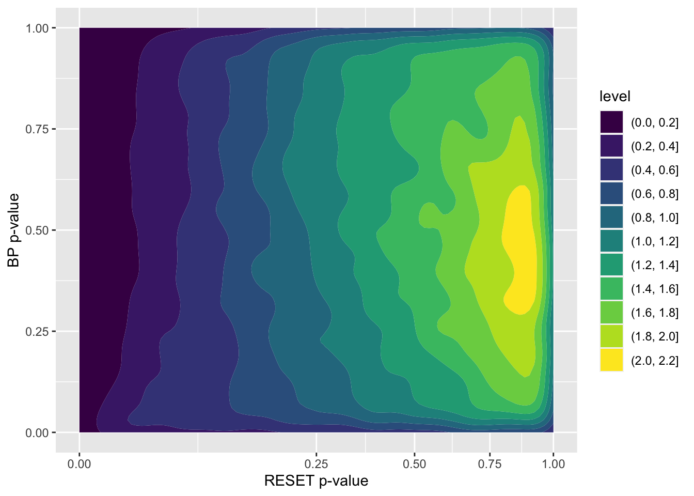

2 Conventional group tests
If we group certain conventional tests together as a single test, we need to adjust the significance level for each individual test.
Considering a group test consisting of a RESET test and a BP test, we can plot their \(p\)-values against each other based on the simulated data.
set.seed(10086)
stand_dist <- function(x) (x - min(x))/max(x - min(x)) * 2 - 1
conv_null_dat <- map_dfr(1:50000, function(i) {
x_dist <- sample(c("uniform",
"normal",
"lognormal",
"even_discrete"), 1)
x <- switch(x_dist,
uniform = rand_uniform(-1, 1),
normal = {
raw_x <- rand_normal(sigma = 0.3)
closed_form(~stand_dist(raw_x))
},
lognormal = {
raw_x <- rand_lognormal(sigma = 0.6)
closed_form(~stand_dist(raw_x/3 - 1))
},
even_discrete = rand_uniform_d(k = 5, even = TRUE))
mod <- poly_model(include_z = FALSE, x = x)
n <- sample(c(50, 100, 300), 1)
tmp_dat <- mod$gen(n)
tibble(x_dist = x_dist,
n = n,
F_p_value = mod$test(tmp_dat)$p_value,
RESET_p_value = mod$test(tmp_dat,
test = "RESET",
power = 2:4,
power_type = "fitted")$p_value,
BP_p_value = HETER_MODEL$test(tmp_dat)$p_value,
SW_p_value = shapiro.test(tmp_dat$.resid)$p.value,
boot_id = i)
})
conv_null_dat %>%
ggplot() +
geom_density2d_filled(aes(RESET_p_value, BP_p_value)) +
scale_x_sqrt() +
scale_x_sqrt() +
xlab("RESET p-value") +
ylab("BP p-value")
We can pick a rectangle area at the bottom left corner such that \(P(\text{RESET rejects } H_0 \text{ or BP rejects } H_0) = \alpha\). The side length of this rectangle is denoted as \(\alpha^*\).
alpha_star <- map_dbl(seq(0.0001, 0.05, 0.0005), function(alpha_star) {
conv_null_dat %>%
filter(RESET_p_value <= alpha_star | BP_p_value <= alpha_star) %>%
nrow()/nrow(conv_null_dat)
}) %>%
{seq(0.0001, 0.05, 0.0005)[which.min(abs(. - 0.05))]}
alpha_star
#> [1] 0.0266